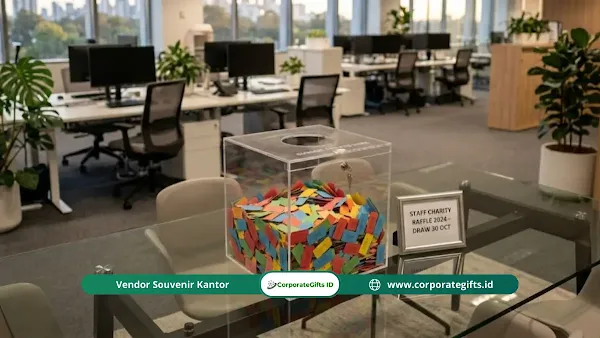

Corporate Gifts ID - Manfaat doorprize bukber perusahaan tidak hanya sekadar memeriahkan suasana ramah tamah, tetapi juga berfungsi sebagai strategi manajemen SDM (HRD) yang sangat efektif untuk meningkatkan retensi, motivasi, dan kebersamaan karyawan.
Poin Kunci Manfaat Doorprize Bukber Kantor:
- Demokratisasi Peluang: Dari staf operasional hingga jajaran manajerial memiliki kesempatan menang yang setara di depan layar undian digital.
- Teori Harapan Vroom: Antusiasme dan komitmen kerja terpicu kuat ketika hadiah yang diundi sangat fungsional bagi kehidupan sehari-hari.
- Efisiensi Anggaran (ROI HRD): Mengalokasikan dana doorprize jauh lebih ekonomis dibandingkan menanggung tingginya biaya turnover dan rekrutmen staf baru.
- Transparansi Mutlak: Memastikan proses undian bebas dari indikasi rekayasa serta menghadirkan suasana inklusif bagi seluruh kepribadian karyawan.
Pernahkah Anda menyadari bahwa agenda kumpul bareng divisi operasional kerap disalahpahami sebagai pemborosan kas semata? Fakta lapangan di berbagai kawasan industri dan perkantoran membuktikan sebaliknya. Undian berhadiah atau doorprize terbukti secara psikologis mampu meleburkan sekat birokrasi hierarki dan menyatukan seluruh elemen organisasi.
Ilusi Keberuntungan dan Peningkatan Kinerja
Sistem bonus performa formal sering kali hanya dinikmati oleh kelompok staf tertentu yang bersinggungan langsung dengan target pendapatan. Sebaliknya, undian doorprize buka puasa bersama menawarkan keadilan peluang yang merata:
- Demokratisasi Peluang: Staf lini depan, tim keamanan, tim kebersihan, hingga kepala divisi memiliki probabilitas yang persis sama di depan monitor pengacakan nama.
- Teori Harapan (Vroom Expectancy Theory): Semangat partisipasi mencapai puncaknya ketika hadiah yang diperebutkan memiliki relevansi tinggi dengan kebutuhan domestik atau gaya hidup pekerja.
- Pengembalian Investasi (ROI SDM): Biaya merekrut dan melatih talenta pengganti jauh lebih mahal dibandingkan alokasi pengadaan hadiah elektronik atau paket sembako premium.
- Retensi Emosional yang Kokoh: Perlakuan yang adil dalam momen santai membuat karyawan merasa dihargai secara tulus oleh jajaran manajemen.
- Pencair Ketegangan Kerja: Suasana kasual Ramadan sukses memecah kebekuan komunikasi lintas departemen yang biasanya kaku.
Strategi HRD untuk Bukber Kantor yang Inklusif
Tujuan mulia menyatukan kebersamaan tim bisa berbalik menjadi bumerang bila panitia pelaksana kurang peka terhadap keberagaman karakter karyawan. Simak prinsip penting berikut:
- Hindari Pemaksaan Bersosialisasi: Memaksa interaksi fisik berlebihan justru membuat karyawan bertipe introvert merasa canggung dan tertekan.
- Sediakan Zona Aman Santai: Sediakan area observasi santai bagi rekan kerja yang lebih nyaman mengamati jalannya acara tanpa sorotan kamera panggung.
- Jaga Persepsi Keadilan Sosial: Karyawan selalu menakar dedikasi kerja harian mereka dengan seberapa tulus perusahaan memperlakukan mereka dalam acara informal.
- Transparansi Sistem Pengundian: Dugaan manipulasi pemenang atau keberpihakan kepada pihak tertentu akan memicu sinisme mendalam dan merusak iklim kerja pasca-Ramadan.
Cara Undi Doorprize Seru dan Adil
Mengelola sesi undian menuntut ketepatan teknis agar tercipta euforia yang menyenangkan tanpa kecurigaan:
- Visualisasi Layar Digital: Manfaatkan layar proyektor besar dengan aplikasi roda putar interaktif (wheel of names) alih-alih kotak kardus manual yang tertutup.
- Pemicu Lonjakan Hormon Bahagia: Suara efek dramatis dan animasi visual cepat memicu pelepasan hormon dopamin yang membuat audiens bersorak gembira.
- Pengecualian Jajaran Eksekutif: Dewan direksi dan pimpinan puncak wajib dikeluarkan dari daftar kandidat pemenang doorprize utama demi menjaga moralitas acara.
- Bingkisan Partisipasi untuk Semua: Sediakan hampers kecil Ramadan atau goodie bag bermanfaat agar tidak ada seorang pun karyawan yang pulang dengan tangan hampa.

Apresiasi hadiah doorprize bukber yang fungsional dan relevan untuk meningkatkan motivasi serta retensi pekerja.
Ide Doorprize Bukber Kantor yang Menggugah Semangat
Apresiasi modern harus selaras dengan kebutuhan nyata karyawan lintas generasi:
- Hadiah Pengalaman (Experiential Gifts): Voucher relaksasi spa, paket perawatan tubuh, atau tiket liburan keluarga sangat disukai untuk menunjang keseimbangan hidup (work-life balance).
- Keistimewaan Non-Materi: Tambahan satu hari cuti berbayar atau fasilitas slot parkir VIP khusus bulanan memberikan prestise tinggi tanpa membebani kas perusahaan.
- Kebutuhan Rumah Tangga Fungsional: Paket sembako premium, minyak goreng bermutu tinggi, atau peralatan dapur pintar meringankan pengeluaran rumah tangga menyambut Lebaran.
- Perangkat Gawai Pintar: True wireless stereo (TWS), smartwatch, atau speaker bluetooth mini sangat memikat antusiasme kalangan talenta muda (Gen Z).
Tabel Perbandingan Kategori Hadiah Doorprize Bukber
Berikut rangkuman opsi kategori doorprize bukber beserta dampak psikologisnya bagi retensi karyawan:
| Kategori Doorprize | Contoh Hadiah Relevan | Dampak Emosional | Target Sasaran Utama |
|---|---|---|---|
| Sembako & Kebutuhan Pokok | Beras premium, sirup kurma, biskuit kaleng, & minyak goreng | Meringankan beban finansial rumah tangga menjelang hari raya | Staf lini operasional, tim kebersihan, & staf pendukung |
| Peralatan Smart Living | Air fryer digital, blender portabel, & oven toaster elektrik | Memberikan nilai guna jangka panjang yang dirasakan seluruh keluarga | Seluruh karyawan berkeluarga & jajaran staf tetap |
| Work-Life Balance | Voucher spa massage, voucher belanja mart, & kuota cuti ekstra | Apresiasi pemulihan kesehatan mental pasca-tenggat kerja padat | Staf dengan jam lembur tinggi & tim proyek khusus |
| Gadget & Aksesori Modern | TWS earbuds, smartwatch fitness tracker, & wireless powerbank | Menumbuhkan kebanggaan gaya hidup modern dan mobilitas kerja | Talenta muda, tim kreatif, & divisi teknologi |
Catatan: Seluruh paket hadiah doorprize elektronik, hampers sembako kurasi, dan souvenir perusahaan custom dapat disiapkan rapi dengan branding khusus di CorporateGifts.ID.
Kesimpulan
Mari tinggalkan pandangan usang yang menganggap buka puasa bersama kantor sekadar rutinitas penghabisan anggaran tahunan. Menggelar undian doorprize yang adil, transparan, dan inklusif adalah taktik retensi jangka panjang yang sangat bernilai bagi kestabilan organisasi.
FAQ: Pertanyaan Seputar Doorprize Bukber Perusahaan

Ditulis oleh: Arinda Zakia
Senior Corporate Gifting SpecialistSpesialis strategi employee recognition dan kurasi doorprize acara korporat di CorporateGifts.ID. Berpengalaman mendampingi tim HRD dan panitia event perusahaan merancang program apresiasi Ramadan yang bermakna dan meningkatkan retensi karyawan.
Lihat Profil Lengkap & Panduan Lainnya